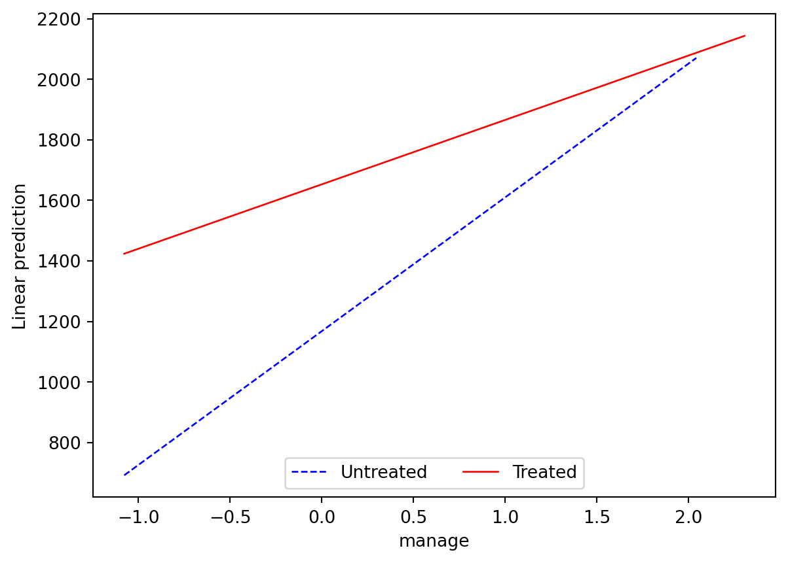
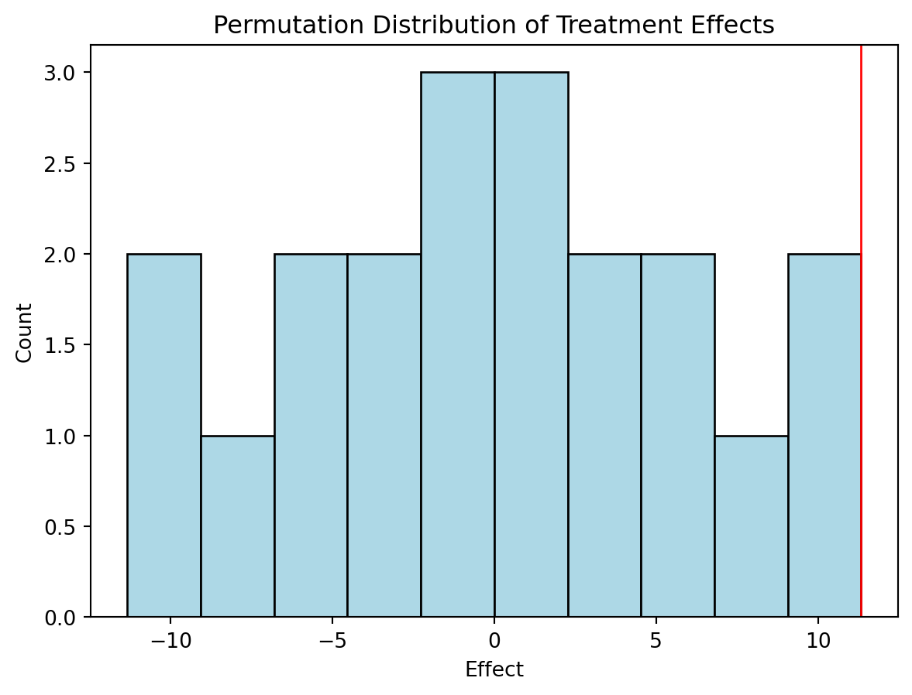

Code Call Out 2.1: Regression, Comparison of Means and Covariates
In this code call out we will explore some basic elements of regression as a means to estimate treatment effects. First we will, very simply, confirm the equivalance between a regression and difference of means estimator for the pooint estimate of binary treatment receipt on outcomes. And secondly, we will explore effect heterogeneity by a single covariate. We will do this with data from Bari et al. (2024), who experimentally assess the impact of access to large business assets in microenteprises in Pakistan, where a randomly treated sample was offered a larger microfinance route to purchase such large assets.
Equivalence between regression and comparison of means
To understand the equivalence between regression analysis and the comparison of means in a binary regression set-up, we will first open the data from Bari et al. (2024) and run a basic regression such as that documented in Table 4 of their paper:
Here biz_ta is an outcome measuring total business assets, and this is measured at wave 1 (ie the wave in data immediately after treatment was first provided).
To confirm that this is–by definition–simply equivalent to a difference in means we can consider the quantities which would be observed if we substituted \(A=1\) and \(A=0\) into the above equation. In this case we can see that the regression consists of a constant term: \(E[Y_i|Treat_i=0]\), and a second term which capture the difference between units receiving treatment and those not receiving treatment: \(E[Y_i|Treat_i=1]-E[Y_i|Treat_i=0]\). This latter is just the treatment effect of interest. Below we confirm that the coefficient on \(A\) above is equivalent to the difference in means.
mean_treatment = data_wave1.loc[data_wave1['A'] ==1, 'biz_ta'].mean()mean_control = data_wave1.loc[data_wave1['A'] ==0, 'biz_ta'].mean()diff_means = mean_treatment - mean_controlprint(f"Coefficient for treatment in regression: {coef_treatment}")print(f"Difference in means (Treatment - Control): {diff_means}")print("The coefficient from the regression should be equal to the difference in means to demonstrate equivalence.")
Coefficient for treatment in regression: 507.03681309809275
Difference in means (Treatment - Control): 507.036865234375
The coefficient from the regression should be equal to the difference in means to demonstrate equivalence.
Here we see that, as expected, our mean for the control group is equivalent to the constant in the regression, and the difference in means is equivalent to the coefficient on the treatment indicator in the regression.
Heterogeneity by a baseline covarite \(X\)
Let’s now consider the incorporation of a covariate into this regression and confirm that we can also quite simply break down (linear) heterogeneity, as discussed in (2.10) of the book. Here we will consider a variable which measures the management capacity of the small businesses in the sample. We will consider this management capacity at baseline, which below we generate, standardise so that it is mean zero, and then interact with treatment:
count 4365.000000
mean 0.012202
std 0.608976
min -1.076952
25% -0.442583
50% 0.000000
75% 0.143815
max 2.305716
Name: Amanage, dtype: float64
/tmp/ipykernel_776376/71791465.py:3: PerformanceWarning:
DataFrame is highly fragmented. This is usually the result of calling `frame.insert` many times, which has poor performance. Consider joining all columns at once using pd.concat(axis=1) instead. To get a de-fragmented frame, use `newframe = frame.copy()`
/tmp/ipykernel_776376/71791465.py:4: PerformanceWarning:
DataFrame is highly fragmented. This is usually the result of calling `frame.insert` many times, which has poor performance. Consider joining all columns at once using pd.concat(axis=1) instead. To get a de-fragmented frame, use `newframe = frame.copy()`
/tmp/ipykernel_776376/71791465.py:6: PerformanceWarning:
DataFrame is highly fragmented. This is usually the result of calling `frame.insert` many times, which has poor performance. Consider joining all columns at once using pd.concat(axis=1) instead. To get a de-fragmented frame, use `newframe = frame.copy()`
We can now consider whether there are differential treatment effects by a firm’s management capacity. To do so, we estimate the interacted regression below which allows for (a) a differential intercept for treated and untreated groups by the inclusion of the treatment dummy and a constant, and (b) a differential slope by management capacity, by including both a control for management capacity, as well as an interaction with treatment:
import statsmodels.formula.api as smfmodel = smf.ols("biz_ta ~ A + manage + Amanage", data=data[data["wave"] ==1]).fit()print(model.summary())
Above we eastimate this regression, and observe that while in general business with higher management capacity at baseline have much higher business assets, there is not (at least in wave 1) a statistically significantly different return to management among treated and untreated individuals. There is, however, a quite large negative effect on the interaction, weakly suggestive of smaller treatment effects among firms with higher management capacity. We can visualise this as in Figure 2.1 of the book. There are many ways we can do this, and you may wish to explore alternative ways of setting this up by considering marginal effects, or by confirming that the four quantities estimated in the regression above correspond to the two intercepts and two slopes of the lines plotted below which can be similarly plotted “by hand” based on these values. However, below we can see that it is sufficient to plot the predicted effect among treated and control units across the range of the manage variable. We do this in the code block below, first generating this predicted effect from the regression, and then plotting resulting curves for treated and control units.
import pandas as pdimport matplotlib.pyplot as pltdf_pred = data.loc[data['wave'] ==1].copy()df_pred['yhat'] = model.predict(df_pred)fig, ax = plt.subplots()for grp, grp_df in df_pred.groupby('A'): grp_sorted = grp_df.sort_values('manage') ls ='-'if grp ==1else'--' col ='red'if grp ==1else'blue' lbl ='Treated'if grp ==1else'Untreated' ax.plot(grp_sorted['manage'], grp_sorted['yhat'], linestyle=ls, color=col, label=lbl, linewidth=1)ax.set_xlabel('manage')ax.set_ylabel('Linear prediction')ax.legend(loc='lower center', ncol=2)plt.show()

While this is just a simple illustration, it points to the flexibility of regression for capturing treatment effects when treatment is randomly assigned, and assumptions of unconditional unconfoundedness are reasonable.
Call Out 2.2: Randomization Inference
Randomization inference is perhaps best-illustrated with practical examples. A particularly illuminating approach to understand how randomisation inference works is visualization through tabular permutation. In this code call-out we will first consider a made-up example based on 3 treated units and 3 control units, before working with a larger number of control and treated units in data from an experiment implemented by Banerjee, Duflo, and Sharma (2021), which we discuss below.
An Exact p-value
It is perhaps useful to see a simple example. Consider the case of 6 units, with 3 observations randomly assigned treatment. Imagine that after having been exposed to treatment, the observed outcomes were, in the treatment group: \((34,27,29)\) and in the control group: \((14,18,24)\). A simple comparison of means estimator suggests that the treatment effect is 11.33. To calculate a p-value, we can permute all the possible combinations, and ask what proportion of these are greater than or equal to this treatment effect. If we consider random orderings of 6 units, this suggests that there are \(6!\) possible combinations, but in reality, as we are randomly choosing 3 units from these 6 to assign a permuted treatment status, the actual value of different combinations is \(6\choose 3\)\(=\frac{6!}{3!*(6-3)!}=20\). We document each of these possible permutations, as well as their permuted treatment effect in the Table below. In this case, we can see that only 1 of the 20 different permutations is greater than or equal to 11.33 (the original treatment assignment). Suggesting an exact p-value of \(1/20=0.05\) if a one-sided test is considered. If, however, we wish to consider a two-sided p-value, there are two values as extreme as 11.33, which is permutation 1, and permutation 20 below, suggesting a two-sided p-value of \(2/10=0.10\).
A Simple Illustration of Randomization Inference
Permutation
T1
T2
T3
C1
C2
C3
Estimate
Original (1)
34
27
29
14
18
24
11.33
2
34
27
14
29
18
24
1.33
3
34
27
18
14
29
24
4
4
34
27
24
14
18
29
8
5
34
14
29
27
18
24
2.67
6
34
18
29
14
27
24
5.33
7
34
24
29
14
18
27
9.33
8
14
27
29
34
18
24
-2
9
18
27
29
14
34
24
0.67
10
24
27
29
14
18
34
4.67
11
34
14
18
27
29
24
-4.67
12
34
14
24
27
18
29
-0.67
13
34
18
24
14
27
29
2
14
14
27
18
34
29
24
-9.33
15
14
27
24
34
18
29
-5.33
16
18
27
24
14
34
29
-2.67
17
14
18
29
34
27
24
-8
18
14
24
29
34
18
27
-4
19
18
24
29
14
34
27
-1.33
20
14
18
24
34
27
29
-11.33
While this is so simple that we can set it up by hand, it is also useful to see how we can compute this in Stata. First, we will load import our “data”:
Now let’s generate our p-value by permuting all possible treatment combinations. While there are many ways we could consider doing this, one is to note that we could start our permutation by assigning units 1, 2 and 3 to treatment and the last three units to control, and subsequently increase the units assigned to treatment until we are assigning units 4, 5 and 6 to treatment, and the remaining units to control. Below we begin by preparing a new frame of data in which to store our resulting treatment effects:
import pandas as pdimport numpy as nppermutations = pd.DataFrame({'permutation': np.arange(1, 21),'effect': np.nan})print(permutations)
permutation effect
0 1 NaN
1 2 NaN
2 3 NaN
3 4 NaN
4 5 NaN
5 6 NaN
6 7 NaN
7 8 NaN
8 9 NaN
9 10 NaN
10 11 NaN
11 12 NaN
12 13 NaN
13 14 NaN
14 15 NaN
15 16 NaN
16 17 NaN
17 18 NaN
18 19 NaN
19 20 NaN
which is simply a frame containing 20 lines where permutation increases from 1 to 20, with an empty variable effect that we can fill in with our effects. Now, let’s begin permuting our effect, where we will generate a variable Wperm which is our new treated unit. The below code will iterate through the three possible units receiving treatment (t1, t2 and t3), starting from units 1, 2 and 3, and going until these reach units 3, 4 and 5 respectively. It is worth reading through this code carefully given that this is done “manually”, but in each loop we will print out the units receiving treatment so that we can convince ourselves that we are indeed seeing the 20 treatment combinations mentioned in the table above.
import itertoolsimport pandas as pdimport statsmodels.formula.api as smf# Generate all 20 permutations and compute effectseffects = []for combo in itertools.combinations(range(6), 3): Wperm = [0] *6for idx in combo: Wperm[idx] =1 df_temp = pd.DataFrame({'Y': data['Y'], 'Wperm': Wperm}) model = smf.ols("Y ~ Wperm", data=df_temp).fit() effects.append(model.params['Wperm'])permutations = pd.DataFrame({'permutation': range(1, len(effects) +1),'effect': effects})
In the code above, within each loop we have estimated our permuted treatment effect, and placed it in the permutations frame. We can now open up this frame, and compare these permutation-based effects to the original effect (which is the first effect stored in our data), and calculate the one-sided and two-sided p-values. We do this below.
import itertoolsimport pandas as pdimport matplotlib.pyplot as pltimport statsmodels.formula.api as smf# Compute effect1 and p-valueseffect1 = permutations['effect'].iloc[0]p1side = (permutations['effect'] >= effect1).mean()p2side = (permutations['effect'].abs() >=abs(effect1)).mean()print("One sided p-value:", p1side)print("Two sided p-value:", p2side)# Plot histogramfig, ax = plt.subplots()ax.hist(permutations['effect'], bins=10, facecolor='lightblue', edgecolor='black')ax.axvline(x=effect1, color='red', linewidth=1)ax.set_title("Permutation Distribution of Treatment Effects")ax.set_xlabel("Effect")ax.set_ylabel("Count")plt.show()
One sided p-value: 0.05
Two sided p-value: 0.05

Here we can confirm that we find the p-values we calculated by hand above, and view these permutations graphically in the resulting histogram above.
A Real Example
It turns out, that to translate this to a case with real data, we do not need to add many additional elements. In this section, we work with data from a randomized control trial that examines asset transfers to poor households in India, as discussed in the paper by Banerjee, Duflo, and Sharma (2021). Here we will consider the impact of receipt of asset transfers on two outcomes: a financial index ind_fin_el1 and an asset index asset_ind_tot_el1.
Before we explore randomisation inference, let’s open these data and estimate a simple regression, considering the effect of treatment receipt on the asset index:
import pandas as pdimport statsmodels.formula.api as smfdata = pd.read_csv("data/Banerjee_et_al_2021.csv")model = smf.ols("asset_ind_tot_el1 ~ treatment", data=data).fit()robust_res = model.get_robustcov_results(cov_type="HC1")print(robust_res.summary())assetEffect = model.params["treatment"]print(assetEffect)
From the summary we can note that \(\widehat{\tau}_{ATE} = 0.408\) and its standard error equals 0.118. This suggests a p-value of around 0.0005. We have saved the original estimated effect in a local (assetEffect) which we will use below.
We can similarly consider the financial index:
import pandas as pdimport statsmodels.formula.api as smfdata = pd.read_csv("data/Banerjee_et_al_2021.csv")model_fin = smf.ols("ind_fin_el1 ~ treatment", data=data).fit()robust_fin = model_fin.get_robustcov_results(cov_type="HC1")print(robust_fin.summary())finEffect = model_fin.params["treatment"]print(finEffect)
where we observe a point estimate quite close to zero, and p-value of 0.817.
Let’s now consider how we conduct permutation inference in this particular case where there are too many permutations of treatment to feasibly consider them all. Here, rather than considering all possible permutations, we will consider randomly assigned permutations of treatment which respect the original treatment assignment structure. Namely, if we inspect these data, we can see that there are 991 units, 525 of whom receive treatment. We can thus conduct a single permutation by randomly re-assigning treatment to 525 units, and control to the remaning units. We do this below, estimating the correspnding effect.
Here we see that, perhaps unsurprisingly, our randomly assigned treatment results in a small estimated “effect”, of 0.082, which is substantially smaller than the original treatment effect itself.
To estimate a permutation-based p-value all we need to do is repeat this procedure a large number of times (below 10,000 times), and count the proportion of permuted effects which are larger than our estimated treatment effect. We set this up below, using the ++ notation to increase our local pval by one any time the condition on line 12 is met:
Here we see that among all of our 10,000 placebos, only 8 effects were larger than the effect we actually observed in our data, suggesting a p-value of 8/10000, or 0.0008.
We can generalise this idea below (for this specific data set-up), and below we do this defining a program which we call randomisation_inference. This program takes a single argument, which is the outcome we wish to consider, and packages the procedure we have explored above, finally printing the p-value and a number of other pieces of information. While we could further optimise this program, for example to automatically infer how to permute the treatment assignment and to return resulting p-values to users, the below is sufficient for our interests here of estimating a randomisation-based p-value.
import numpy as npimport statsmodels.formula.api as smfdef randomisation_inference(varname, data, Npermut=10000): np.random.seed(121316)# Observed effect model_obs = smf.ols(f"{varname} ~ treatment", data=data).fit() obs_effect = model_obs.params['treatment']# Permutation test pval =0 n = data.shape[0]for _ inrange(Npermut): epsilon = np.random.randn(n) idx = np.argsort(epsilon) Wperm = np.zeros(n, dtype=int) Wperm[idx[:525]] =1# same number of treated as original df_temp = data.copy() df_temp['Wperm'] = Wperm model_perm = smf.ols(f"{varname} ~ Wperm", data=df_temp).fit()ifabs(model_perm.params['Wperm']) >abs(obs_effect): pval +=1 p_value = pval / Npermutprint(f"The observed effect of {varname} is {obs_effect} and its p-value is {p_value}")
Finally, we can run this program, simply passing as an argument the two variables we have examined above. We do this below:
The observed effect of ind_fin_el1 is -0.009589322745445189 and its p-value is 0.8161
The observed effect of asset_ind_tot_el1 is 0.4077528208202771 and its p-value is 0.0008
If we compare these p-values to regression-based estimates, we will see that, perhaps unsurpringly, they are very similar.
Code Call Out 2.3: Bootstrap
For an introduction to the bootstrap, refer to Section 2.4.4 of the book. Here we will examine a computational implementation of a bootstrap standard error and confidence intervals, using data from Chong et al. (2016) which we have worked with above. First we will consider the main regression \[Y_i = \mu + \tau_{ATE}W_i + \varepsilon_i.\] Here we will work with the data Chong_et_al_2016, and examine the total cognitive score (wii_total) as our outcome measure \(Y_i\). We can load the data and examine the estimated treatment effect via regression below.
import pandas as pdimport statsmodels.formula.api as smfdata = pd.read_stata("data/Chong_et_al_2016.dta")print(data[['student_id', 'hhid', 'treat']].head(5))data_clean = data.dropna(subset=['wii_total', 'treat'])model = smf.ols("wii_total ~ treat", data=data_clean).fit()print(model.summary())
From the summary we can note that \(\widehat{\tau}_{ATE} = 57.46\) and its standard error equals 25.26. This suggests a p-value of 0.024, and 95% confidence intervals of [7.66;107.267]. In this case the standard errors are computed via the standard OLS variance estimator, assuming homoscedastic errors, although heteroscedasticity-robust standard errors can be requested quite simply using the robust option from the command reggress This is showed below, resulting in slight variations to the reported standard error (and correspondingly, p-value and resulting confidence intervals).
An alternative to these closed-form methods for variance estimation is to use bootstrap resampling methods. There are multiple ways a bootstrap can be implemented, but the simplest here will be to simply conduct a paired bootstrap, which is also robust to heteroscedasticity. The pairs bootstrap consists of, first, sampling with replacement the ordered pairs \(\left\{(y_i,w_i)\right\}_{i=1}^{N} = \left\{(y_1,w_1),\ldots,(y_N,w_N)\right\}\) from original data, obtaining a “new” dataset of \(N\) resampled pairs \(\left\{(y_i^*,w_i^*)\right\}_{i=1}^{N} = \left\{(y_1^*,w_1^*),\ldots,(y_N^*,w_N^*)\right\}\). The new dataset thus simply consists of (potentially repeated) randomly selected rows of the original data. Let’s see what this looks like with a single bootstrap replicate. First, we will generate a vector of size \(N\), drawn with replacement. We do this below, having a look at the first 10 rows of the vector.
import numpy as npnp.random.seed(121316)data_bootstrap = data_clean.sample(n=len(data_clean), replace=True, random_state=121316)print(data_bootstrap[['student_id', 'hhid', 'treat']].head(5))
With this sample, we have obtained an estimate of \(\widehat{\tau}_{ATE}^* =23.41\); a different value to the original value, in line with variation in the sample used for estimation. If we want some idea of how much estimates vary as the sample changes (ie the sampling variation of our estimate), the next step simply consists of repeating this bootstrap process \(B\) times, resulting in \(B\) estimates of \(\widehat{\tau}_{ATE,(b)}^*\) with \(b\in\{1,\ldots,B\}\). Let’s set \(B=1,000\), and do this:
import numpy as npimport statsmodels.formula.api as smfnp.random.seed(121316)taus = np.empty(1000)for i inrange(1000): idx = np.random.randint(0, len(data_clean), size=len(data_clean)) data_bootstrap = data_clean.iloc[idx] model = smf.ols("wii_total ~ treat", data=data_bootstrap).fit() taus[i] = model.params["treat"]
You may wish to step through each of the lines in this loop to ensure that you can see what is going on, but the end product of this code is a column matrix called taus which has been filled in with \(B\) estimates of \(\tau\), \(\left\{\widehat{\tau}^{(b)}\right\}_{b=1}^{B}\). The next step is to convert this column matrix into a variable in our dataset
taus_df = pd.DataFrame({'taus': taus})
We can have a look at the entire empirical distribution of these estimates as follows:
As we can see, this empirical distribution is close to centred on the original estimate (in the limit, they will be exactly the same, which is something you may wish to confirm by using a larger value for \(B\)), while also giving us some idea of the variation of the estimate over alternative resamples. We additionally plot the empirical 2.5th and 97.5th quantiles of the distribution, which provides a 95% confidence interval for \(\widehat\tau\). Clearly, and in line with the regression results observed above, we can reject the null that \(\tau=0\) with some certainty. Using these values \(\left\{\widehat{\tau}^{(b)}\right\}_{b=1}^{B}\), finally we display the estimate’s standard error as the standard deviation of the bootstrap estimates, and the confidence intervals can be generated from empirical quantiles. We illustrate this below:
var_estimate = taus_df['taus'].var()sd_estimate = taus_df['taus'].std()ci = taus_df['taus'].quantile([0.025, 0.975])print(f"The variance estimate is: {var_estimate:.4f} as such, the standard error estimate is: {sd_estimate:.4f}")print(f"The empirical 95% confidence interval is: [{ci.iloc[0]:.4f}, {ci.iloc[1]:.4f}].")
The variance estimate is: 500.2855 as such, the standard error estimate is: 22.3671
The empirical 95% confidence interval is: [16.4375, 105.4291].
We can see that the standard error, and hence 95% confidence interval, is very closely alligned to that from regression documented above, given both are valid under broadly similar assumptions.
References
Banerjee, Abhijit, Esther Duflo, and Garima Sharma. 2021. “Long-Term Effects of the Targeting the Ultra Poor Program.”American Economic Review: Insights 3 (4): 471–86. https://doi.org/10.1257/aeri.20200667.
Bari, Faisal, Kashif Malik, Muhammad Meki, and Simon Quinn. 2024. “Asset-Based Microfinance for Microenterprises: Evidence from Pakistan.”American Economic Review 114 (2): 534–74. https://doi.org/10.1257/aer.20210169.
Chong, Alberto, Isabelle Cohen, Erica Field, Eduardo Nakasone, and Maximo Torero. 2016. “Iron Deficiency and Schooling Attainment in Peru.”American Economic Journal: Applied Economics 8 (4): 222–55. https://doi.org/10.1257/app.20140494.